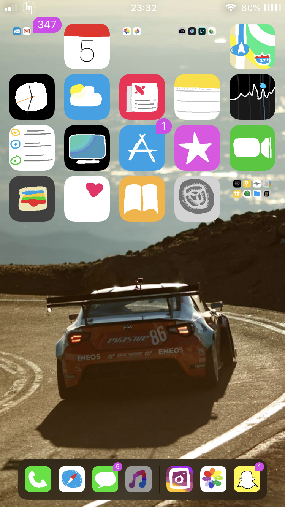
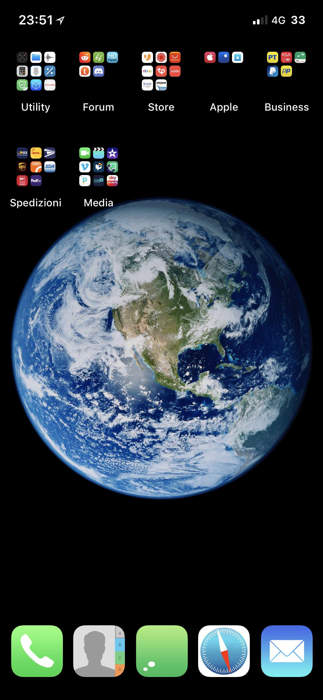

-
Removes folder backgrounds from Springboard.
Works on iOS 10/11. iPhone X is supported!
iOS 12 support is unknown, if you would like to test it, go ahead, and please report it to 19card on Twitter. - Link to original Reddit thread here.
Depends on:
- None
Images
-  
In this version
- Tweak no longer conflicts with another tweak called NoFolderBackgrounds.